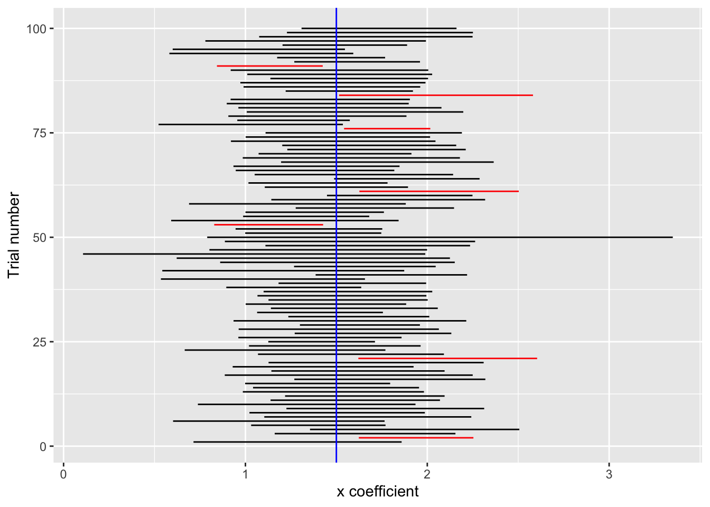

library(mosaic)
library(math300)
data("Galton", package="mosaicData")Math 300 Lesson 23 Notes
Estimating sampling variation from a single sample
Overview
The authentic context for estimating the magnitude of sampling variation is when we have only a single sample, not the imagined set of samples that we studied in Lesson 23. The estimate of sampling variation is used to describe the precision of a sample summary which is often presented in the form of a confidence interval.
Reading
Objectives
23.1 Construct and interpret confidence intervals on model coefficients and relate the intervals to the sampling distribution.
23.2 Recognize that confidence intervals are only about sampling variation. They do not measure or summarize bias.
Libraries
Lesson
Exercise 23.1
The regression method was introduced in the 1880s by Francis Galton. In this exercise we’ll explore the same data used by Galton in his demonstration. The data are available to us as the Galton data frame in the {mosaicData} R package.
The unit of observation in Galton is a full-grown child living in a household with his or her parents. Each household is identified by a unique number, stored in the family column. The variable height records the child’s height in inches, while mother and father record the heights of the parents. The total number of children in the household is recorded in nkids. sex is also recorded.
Galton’s particular interest was in the heritability of measurable traits like height. At the time he worked, there was no theory of “genetics” or detailed understanding of how traits were passed from parents to child.
Task 1.1
The model specification height ~ father + mother can describe the extent to which children inherit their height at full-growth from their parents. Here are the coefficients from that model:
lm(height ~ father + mother, data = Galton) %>%
coef()(Intercept) father mother
22.3097055 0.3798970 0.2832145 The coefficients allow us to do a kind of thought experiment. Imagine a full-grown child of height 63 inches. Now imagine that same child but with a different father. The new father is 1 inch taller than the original father. According to the model coefficients, the child of the new father would be 63.38 inches tall, inheriting 0.38 of the new father’s extra height.
Whose height, the father’s or the mother’s, has a greater influence on the child’s height. Explain what you see in the coefficients that leads you to your answer.
Your answer:
Task 1.2
Since we know there is inevitably sampling variation, we shouldn’t take all the digits of the father or mother coefficient at face value. The confidence intervals on those coefficients summarize the actual precision of the coefficients.
Calculate the confidence intervals from the same model as in Task 1.1.
# For task 1.2Looking at the confidence interval, reconsider your answer to the question from Task 1.2: Whose height, the father’s or the mother’s, has a greater influence on the child’s height. Explain what you see in the confidence intervals that leads you to your answer.
Your answer:
Task 1.3
Confidence intervals can be wider or narrower depending on what other explanatory variables are included in the model specification. Calculate the confidence intervals on the coefficients from the model specification height ~ father + mother + sex.
# For task 1.3Does including sex in the model make the confidence intervals broader or narrower?
Your answer:
Task 1.4
It’s conventional wisdom that a wife and her husband are more similar in their height than would be a randomly selected woman or man. If this is so, then variation in wive’s heights should account for variation in their husbands’ heights.
To check this out, we can use the mother and father variables from Galton and the model specification father ~ mother. Train that model and find the confidence interval on the mother coefficient.
# For task 1.4Does the confidence interval lead you to conclude that conventional wisdom matches what Galton has to say? Explain what specifically about the confidence interval leads to your conclusion.
Your answer:
Do the thought experiment in which you increase the mother’s height by 12 inches. (That’s a lot!) According to the confidence interval, how much taller will the father be? Give a confidence interval.
Your answer:
Task 1.5
If we were studying children and their parents in the same way an ecologist studies birds and their chicks, we might hypothesize that the children compete with one another for vital resources, and so the children from larger families will tend to be smaller than the children from smaller families.
Build the model height ~ mother + father + sex + nkids and look at the confidence interval on the nkids coefficient.
# For task 1.5What do the data suggest, do kids compete for vital resources?
Your answer:
So far as the nkids hypothesis is concerned, mother, father, and sex are not of direct interest. Such explanatory variables that are not of direct interest are called covariates. (They are perfectly ordinary explanatory variables, it’s just that we’re not directly interested in them.) The question might arise in your mind, why include explanatory variables if we’re not directly interested in them?
To answer this question, fit the simple model height ~ nkids and look at the confidence interval.
# lm(height ~ nkids, data = Galton) %>% conf_interval()What does the confidence interval on the nkids coefficient from the simple model suggest to you about why including covariates is useful? (We’ll return to this topic in Lesson 29.)
Your answer:
Exercise 23.2
A more complete presentation of confidence intervals would point out that the length of the interval depends not only on the sample size \(n\), but also on something called the “confidence level,” which is a number between 0 and 100%. In practice, confidence intervals are almost always presented at a confidence level of 95%, and that is the default for conf_interval().
This exercise is a demonstration of what the “confidence level” is about. Understanding that will give you a better appreciation of why 95% is the confidence level used in practice.
The confidence level has to do with how the confidence interval might change from one sample to another. We’ll show this by generating many trials. We’ll use dag01 for the demonstration. dag01 has just two variables, x and y. The x variable is endogenous, but y is computed from x with the formula 1.5 * x + 4 + exo(). Consequently, it’s reasonable to expect that the confidence interval on the x coefficient will include the “true” value from the formula: 1.5.
Let’s see if this works out. The following code implements drawing a sample from dag01, finding the confidence interval on the x coefficient, and setting color to black or red depending on whether the “true” value 1.5 is inside the confidence interval.
one_trial <- function(n = 10, level=0.95) {
lm(y ~ x, data=sample(dag01, size=n)) %>%
conf_interval(level=level) %>%
filter(term == "x") %>%
mutate(.color = ifelse(1.5 > .lwr & 1.5 < .upr,
"black", "red"))
}You are not required to understand the code in one_trial(), but you should be able to make sense of the its output.
one_trial(n=20, level=0.95)# A tibble: 1 × 4
term .lwr .upr .color
<chr> <dbl> <dbl> <chr>
1 x 1.28 2.35 black one_trial(n=20, level=0.95)# A tibble: 1 × 4
term .lwr .upr .color
<chr> <dbl> <dbl> <chr>
1 x 0.846 1.74 black one_trial(n=20, level=0.95)# A tibble: 1 × 4
term .lwr .upr .color
<chr> <dbl> <dbl> <chr>
1 x 0.599 1.58 black Here’s how to generate 100 trials, each involving a sample of size \(n=20\) turned into a confidence interval on x at the 95% confidence level.
Trials <- do(100) * one_trial(n=20, level=0.95)The next chunk defines a special-purpose function that will make a graphic showing all of the trials. The graphic is not in RESPEX format. The vertical axis is the trial number. The horizontal axis is in units of the x coefficient. Each horizontal line segment shows one confidence interval. There is also a blue vertical vertical line marking the value 1.5. By no means are you expected to create graphics of this sort, but you should be able to interpret the graph itself.
graph_trials <- function(Trials) {
ggplot(Trials, aes(x=.lwr, xend=.upr,
y=.index, yend=.index,
color=.color)) +
geom_segment() +
geom_vline(xintercept=1.5, color="blue") +
ylab("Trial number") + xlab("x coefficient") +
scale_color_identity()
}To use this simulation, generate a set of trials and graph them, like this:
Trials <- do(100) * one_trial(n=20, level=0.95)
graph_trials(Trials)
Each of the 100 confidence intervals is drawn as a horizontal line. Whether or not a particular confidence interval includes the blue line is somewhat random, but the large majority of them do. The one’s that don’t are colored red to make them easy to spot.
Task 2.1
Run the code chunk to generate the samples several times in a row. Take note of how many of the 100 confidence intervals do not touch the blue line.
Based on your observations, about what fraction of the confidence intervals do touch the blue line?
Your answer:
Task 2.2
Repeat the simulation, but setting level=0.50.
# Trials <- do(100) * one_trial(n=20, level=0.50)
# graph_trials(Trials)Based on your observations, about what fraction of the confidence intervals touch the blue line?
Your answer:
Compare the typical length of the confidence interval in the level=0.50 simulation to those in the level=0.95 simulation. How are they different? Does this explain why more of the level=0.95 confidence intervals touch the blue line?
Your answer:
Task 2.3
Go back to Task 2.2, still using the levels 0.95 and 0.50. But this time, change the sample size from \(n=20\) to \(n=80\).
In theory, how much shorter should the \(n=80\) confidence intervals be than the \(n=20\) intervals?
Your answer:
In practice, do the \(n=80\) confidence intervals intersect the blue line in the fraction indicated by the confidence level used?
Your answer:
How about when \(n=500\), do the confidence intervals intersect the blue line the expected fraction of times?
Your answer: That’s pretty amazing that we can generate such confidence intervals!